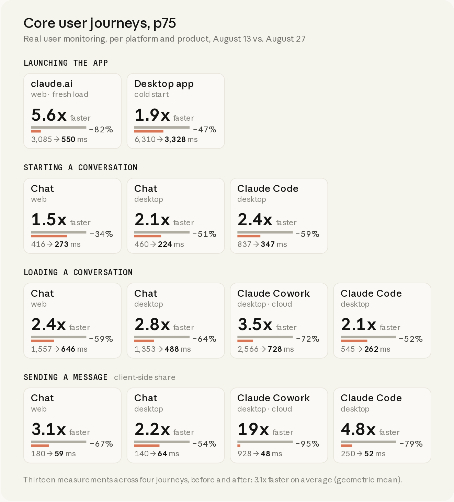
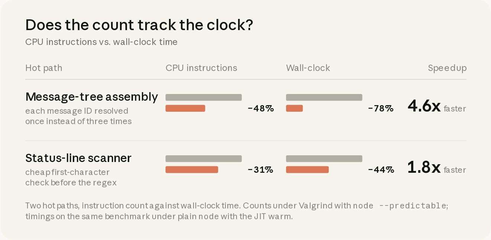
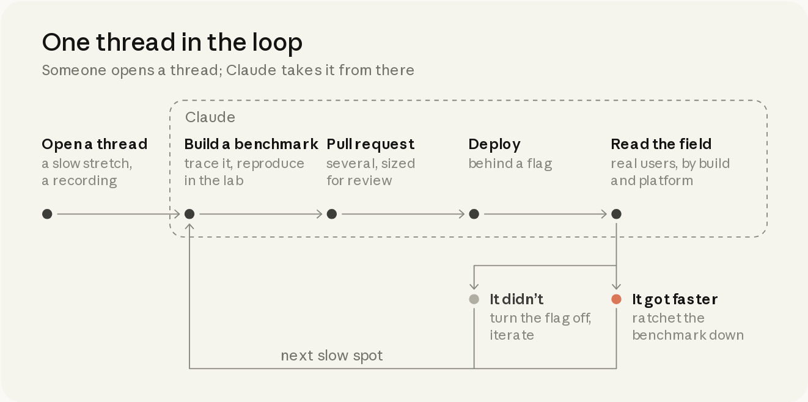
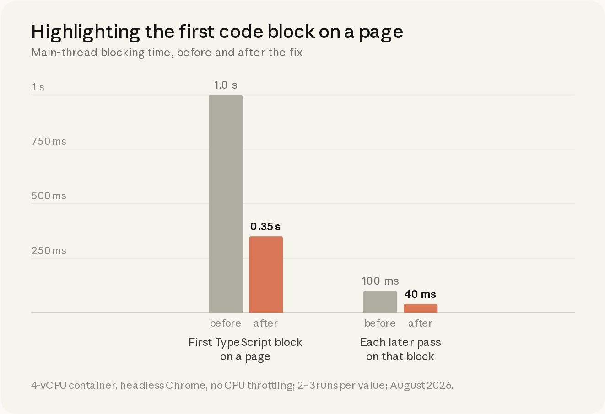

一旦 Claude 能量化某件事，它就能把它做得更快。于是我们不断找更多可测量的东西。
今年八月，我们用两周冲刺，把 claude.ai 与 Claude 桌面端的核心体验提速了大约 3 倍。用户一直说慢，他们说得对。我们全程在一个 Slack 频道里推进，每个线程都有 Claude。
我们聚焦占用户活动约 95% 的四条旅程。在第 75 百分位：claude.ai 冷启动到可输入页面从 3.1 秒降到 0.55 秒；新建 Claude Code 会话从 0.8 秒降到 0.3 秒；加载 Claude Cowork 云会话从 2.6 秒降到 0.73 秒。合计估算，每天能为用户省下数万小时的等待。

我们使用了 Claude Tag（beta），跑的是大致可比 Opus 5.5 的内部研究模型。Claude 找瓶颈、建基准、落地改进，并盯住每一次发布。我们负责定目标、做取舍，并审批每一处改动。靠这套方式，我们合并了三千多次变更，没有一次面向客户的事故或回滚。本文讲述我们交付了什么、如何度量，以及与 Claude 一起安全运转的闭环。
任务简报
冲刺开始前，我们建了一个 Slack 频道，并写下常驻指令：
@Claude 你的工作是推动与 claude.ai 网站和桌面端性能相关的一切。职责包括：监控发布以防性能回退、评估现有遥测的准确性与覆盖面、维护整理良好的可观测性仪表盘、主动解决已观察到的问题与低垂果实、提出性能项目机会，并与人类队友沟通。[…]
这个频道的终极目标是让你尽可能自主；但今天我们知道，这还做不到。
我们让 Claude 通过 Datadog MCP 服务器分析用量数据。它识别出四条最高影响的用户旅程：启动应用、开始对话、加载已有对话、发送消息。横跨 Web 与桌面、以及各产品线，这些旅程一共对应十三项测量。为建立基线，我们补齐埋点，直到它们可直接对比：每一项都从用户交互开始，到结果渲染完成结束，并区分客户端与服务端工作。
冲刺启动时，我们手里有一份约二十个手工挑选的项目清单，各自瞄准特定旅程。Claude 以毫秒为单位估算每个项目的影响，我们汇总这些估算来设定冲刺目标。有些项目相当大，但我们觉得两周内多半能完成大部分。
到第三天，十三项目标里我们打中了十二项。
计划中的项目很早就落地了。为加快启动：我们把静态 composer 烘焙进 HTML，让用户在 React 初始化期间就能打字；并预编译 V8 代码缓存，使桌面壳主进程不必从头重新编译。为加快导航：我们在会话之间保持 composer 挂载、在用户悬停时预取会话，并把侧栏重渲染削减了 90%。
我们也留出空间，让 Claude 自己发现机会并提出新工作流。那些工作流很快长成完整项目，远超最初目标。于是我们设定新目标，并继续寻找更多可测量的东西：
@Claude 我们几乎资助了原始项目清单里的每一项，而且还不止。来做一次刷新吧[…]我们还没探索什么、还能在哪里爬山、此刻最大的机会在哪？[…]我对离谱的想法也开放
任何事都可以爬山优化
从一开始我们就知道，迭代速度要快过发布节奏。Claude 可以异步工作很多小时，甚至整夜；我们希望它在不等待线上读数的情况下验证原型。为此，我们寻找其他「实验室内」性能度量方式。
Sam 找到了第一条线索：
除了墙钟计时，我们还能做什么？比如能不能量 JS 指令数？
可以。对纯 JS 热路径，字面指令计数：在 Valgrind 下用 node --predictable 跑基准，并与签入的基线对比——跑一次即可，不需要统计。
浏览器路径下 Chromium 没有指令计数，但有一串其他确定性计数：每次交互的 React commit 数、V8 精确覆盖得到的函数调用次数、layout 与 style-recalc 次数、DOM 变更。你想先做哪个？
一个线程探索 valgrind + Ir + --predictable，浏览器/React 基准各自开新线程。全部线程都 ping 我。你知道我们要什么。开干。
根据真实对话重现。
十一分钟后，五个线程同时跑起来，分别聚焦：指令数、V8 调用次数、React commit、样式重算、DOM 变更。
我们对每一个新基准都保持怀疑。每个基准有两份工作：第一，给 Claude 一个能在实验室里拉动的指标；第二，作为 CI 护栏，数字只能向下棘轮。若基准抖动，或与用户延迟不相关，我们就扔掉，而不是让 Claude 爬错山。
@Claude 请证明：针对这些指标爬山，都能带来可测量的墙钟性能收益。对任何无法证明的候选，我们会撤掉对应基准。
墙钟时间是用户感知，但它噪声大，毫秒级波动太难当 CI 门禁。指令数有吸引力，因为确定性强；但我们仍需要 Claude 证明它与墙钟时间同向变化。
于是我们让 Claude 在两条热路径上把计数压下去：组装对话消息树的例程，以及扫描 Claude Code 输出状态行的扫描器。Claude 用 Valgrind 剖析两者，发现第一条路径约四分之一的指令是巨型多态字典查找——同一个消息 ID 被解析了三次。
一小时后，两条路径的指令分别下降 48% 与 31%，墙钟时间下降 78% 与 44%。我们签入了两道新棘轮。从此，任何抬高这些路径指令数的 PR 都会在 CI 失败；每日任务只要计数下降就会下调天花板。

这引出了冲刺的核心教训：有了 Claude，测量某件事，就等于让它变得可解。
过去，测量是第零步：加指标、等数据流入，然后才开始理解问题。有了 Claude，它是爬山的第一步。一旦 Claude 有一个要击败的数字，它就能开始优化。因此，杠杆最高的动作就是：找到更多可测量的东西。
闭环：一个线程接着一个线程
这一切都发生在同一个 Slack 频道里，多位工程师与 Claude 在每个线程里一起干活。冲刺逐渐收敛成一个闭环：
- 有人开一个线程，讨论某段旅程里的慢点，常附截图或录屏。
- Claude 追踪流程，然后找到或构建能复现问题的基准。
- 实验室结果看起来有希望后，Claude 带回 PR——常常是多个、按风险与评审粒度拆分，任何用户可见改动都放在开关后面。
- 上线后，Claude 盯着发布并读线上数据。
- 若性能提升，Claude 通过下调基准棘轮锁定胜利；否则关掉开关继续迭代。
- 然后在同一旅程里寻找下一个慢点。

一个例子：有人分享了侧栏行在页面加载后才「弹入」的录屏。Chat 与 Cowork 的行在不同时刻解析，页面显得抖动。现有监控都没抓住它。最接近的是 Cumulative Layout Shift，但每次位移大约只有 0.008——远低于 0.1 的「良好」阈值。
Issac 提出直接引用底层的 Layout Instability API。Claude 创建了遥测事件，把每次 layout-shift 条目的 sources 映射到命名区域（如侧栏、transcript）与阶段（如首绘前、可输入后）。它还加了集成测试：打开带已填充侧栏的页面，把侧栏数据拖到首绘之后再释放，任一命名区域出现位移就失败。Claude 用它当基准证明修复：主分支上 20/20 红，PR 上 20/20 绿。
事件上线后，Claude 读线上数据发现：31% 的 Web 页面加载在页面已可用后、且无用户交互的情况下仍移动了某些元素。于是 Claude 按名字逐个排查原因：晚到的表头行、用户名加载后侧滑的光标、滚动条出现时移动的列表。它批量修掉最严重的几项，修完再找下一批。
那只是一个线程。冲刺期间，我们同时开着一百五十多个线程。
水平扩展
一旦闭环在一个线程上跑通，开更多线程就只是「再开几个」的事。线程不再在原请求完成后关闭，Claude 会继续往下挖。单个线程能打出五十、有时上百个优化 PR。越来越多时候，是 Claude——而不是我们——自己开新线程去追它在别的调查或夜间任务里发现的机会。频道里的工程师 Shelley 说：「（这个模型）是个数字恶魔。」
每一次测量都能挖出可改进点。Claude 做了 React hook 普查，发现 composer 打字路径上有 6,900 个 hook 与 900 个 store 订阅，每次按键都重渲染。Claude 统计样式重算，发现单个 :root:has() 选择器给每次 DOM 变更额外加上 24 毫秒。Claude 追踪首绘后的代码路径，发现残留的 location.reload() 每天造成约五十万次隐藏重载，而我们的加载指标完全看不见。Claude 读空闲标签页的采样，发现相同的缓存快照每分钟两次被克隆进 IndexedDB，而且全在主线程上。
我们很少预知一个线程会通向哪里。在扫 CPU 卡顿时，Claude 注意到高亮一个已完成的代码块可能把页面冻住约一秒。它在实验室挖下去，找到罪魁祸首：长破折号（em dash）。若回复的 markdown 含任何非 Latin-1 字符（如 em dash 或弯引号），V8 会把整个字符串存成 UTF-16，于是所有语法高亮正则都走更慢的双字节路径。Claude 用二十行左右的改动修复：在高亮前把每个代码块拷贝成单字节字符串。

到第二周，我们几乎没法把产出压进每日更新。最忙的日子里，一天落地超过两百处变更。Claude 持续提出新基准；大约三分之一的 PR 附带额外遥测或护栏，而每一件新仪器又生成更多线程、更多机会。
在一个频道里工作意味着一切公开。我们跳进彼此的线程争论决策、庆祝胜利。消息传开：其他团队开始把变更带到这个频道做性能评审。新项目也开始被写成「微妙地更可性能」的形态——因为护栏与 Claude skills 已经铺开。
护栏
我们为这种节奏做过准备。因为几乎所有触碰的都是热路径（首绘、composer、transcript），安全机制事先就就位：每个 PR 走自动评审并至少一人批准；优化之前必须先有单元测试；任何可能导致用户可见问题的改动都放在短期特性开关后面。
开关开始堆积时，我们开线程协调发布与清理。Claude 把每个开关分类为「紧急关闭」或「渐进放量」，并在安全后尽快退役。两周内我们引入了近两百个开关，其中一半以上在冲刺结束前已清理干净。
我们也知道：在快速演进的代码库里，性能收益会衰减；而 Anthropic 的代码发布很快。一旦项目证明了收益，我们就投资保护它。例如静态 composer，设计上就很脆：我们几乎立刻给用户看一份页面的 HTML 副本，再让 React 直接画在上面。
若 React 渲染偏哪怕一个像素，魔法就没了。于是 Claude 建了几十道护栏：
- 静态 markup 由真实 React 组件在 jsdom 中渲染生成，测试保证二者永不漂移。
- 集成测试套件在十四种视口尺寸下对比静态页与 React 渲染，断言对齐在 1 px 内。
- 按键测试直接打穿交接过程，任何丢失或乱序的键都会失败。
- 线上每一次交接把位移上报到 0.1 像素；Claude 对任何非零位移事件开线程。
实验室抓不全的，我们还用了最古老的护栏：渐进放量。高风险变更先给员工，再 1% 用户，再全量。静态 composer 内部发布四小时后，一位同事分享了录屏：布局位移，我们的指标完全看不见。他在新标签页打开 claude.ai 时，composer 会下沉——但那不是我们的代码。
偶尔我会看到一个小幅（大约 15–20px）的垂直布局位移（把 composer 盒子往下推），发生在新标签页打开 claude.ai 时（重载页面时不那么明显）。我还没法完全钉死原因，但它确实在。
在你的录屏里找到了——是 Chrome 在调整页面尺寸，不是静态 composer 到真实 composer 的交接（你今天 49 次加载里那次交接都是 0 px）。
- 在新标签页上，Chrome 会在页面下方画自己的 56 px 页脚（“Managed by anthropic.com · Customize Chrome”）。标签导航到 claude.ai 后页脚消失，页面变高 56 px，但大约发生在我们首绘之后 ~100 ms。
/new把问候语与 composer 放在距顶部约 18% 页高处，所以它们下沉约 0.18 × 56 ≈ 10 px（你的视频量到 10）。重载没有页脚可移除，所以只发生在新标签；「偶尔」取决于首绘是否抢在 resize 之前。- 「偶尔」还因为需要 Chrome 在你仍停在新标签页时，从地址栏预渲染页面：隐藏页按更矮高度排版，显示后才 resize。
- 这其实一直潜伏着；只是以前页面从没画得这么早。我们的布局测试看不见它，因为无头 Chrome 没有可收回的浏览器 UI，占位与应用会一起移动。
根据真实对话重现。
不知怎的，Claude 把它追到了 Chrome 推测加载的一个边角情况。用户在地址栏打 URL 时，Chrome 会在后台按当前标签高度预渲染页面。在被组织托管的浏览器上，新标签页因页脚略矮。用户按下回车时，claude.ai 的第一帧显示略矮布局，约十分之一秒后 Chrome 再 resize。Claude 在 resize 过程中钉住布局，并加了测试来模拟预渲染流程。
掌舵
闭环很能产，但并不自主。保持它快速、安全、不跑偏是我们的工作，分三块。
野心。 默认情况下，Claude 对范围很谨慎：它会给发现开票、对可行性打折、把估算垫厚。但我们信任护栏。尤其早期，很多工作是鼓励 Claude 更大胆。
好——一个小 PR，给 Code 补上 Chat 与 Cowork 已有的计时标记。我这周会提；现实地说，Code 的数字还要等几天合并、发布和基线窗口。
你现在提，我就合并并发布。我们有能力做任何事。请更勇敢一点。
收到——一小时内 PR 会上。
根据真实对话重现。
当我们开始打中设定的目标时，线程会慢下来。Sam 挨个线程发同一句话：「继续往下压，目标不是终点。下一步是什么？大胆一点。」
品味。 每个线程有一位具名人类负责人；Claude 用前后截图或录屏标出任何用户可感知的变化，由他们裁决。表格该逐格填入，还是等整行齐了再显示？骨架屏该立刻出现，还是等半秒？流式文本的逐词淡入，值不值它吃掉的五分之一帧预算？Claude 找毫秒，我们权衡取舍。
方向。 我们刻意把每个线程收窄到一个基准或一条旅程，只让 Claude 在该范围内找改进。我们把线程想成一百五十把找钉子的锤子。多数决策关乎排序与用户影响：优先哪些表面、如何合并互相踩脚的线程、何时关掉收益递减的线程。有一份 900 行的 PR 收到一行回复：「裁定：每次发送省 2ms，不值维护这个构建插件的复杂度。」
8 毫秒预算
一个支线任务把一切串了起来。为展示对实时语法高亮所用正则的优化，Claude 附上了实验室里长回答流式输出的录屏。角落里它加了帧率读数，由页面内根据 animation-frame 时间戳计算。
这其实是个挺猛的基准。我们是不是卡在 60 fps？能不能把滚动与流式平滑推到 120？据我理解你的机器可能不支持。
对，今天的机架默认按 60 Hz 走，因为无头 Chromium 默认如此。我相信可以推到 120（无上限 vsync 或 DevTools 帧控制）——先确认，再按 8.3 ms 帧预算重跑评估。
120 Hz 机架更新：可行。通过 DevTools begin-frame 控制，在无头 Chrome 里确定性 120 Hz 步进——240 个 begin-frame 正好 240 帧，每帧 8.33 ms，于是「这一帧是否塞进 120 Hz 预算」变成精确读数，而不是噪声。
太棒了
继续烧
根据真实对话重现。
机制与野心到位后，Claude 开干。每一绘帧预算 8.33 毫秒，于是 Claude 逐帧步进长回复，计时找慢段。它通过记忆已完成块消除每个 chunk 的 O(消息长度) 工作，把增长中代码围栏的分词逻辑挪到 worker，并逐格揭示表格。
就在那一个线程里，我们落地了近六十个 PR。长回复对主线程的总阻塞从约 750 毫秒降到约 200 毫秒，CPU 大约降到三分之一，并在 120 Hz MacBook 上从头到尾稳住 120 fps。120 Hz 机架本身变成夜间任务，由 Claude 盯回归。
Web 与桌面上的 Claude 长回答流式现在大约平滑了 4 倍。
我们重建了流式渲染器，只触碰仍在变化的部分，因此长回复在较慢笔记本上卡顿少约 9 倍，最坏冻结短约 4.5 倍，并在 120Hz MacBook 上全程稳住 120fps。
冲刺开始时，我们并没计划去爬山「流式输出相邻帧之间的毫秒」。但事实证明我们数得清它们——而凡是能数清的，Claude 就能爬。
下一步
今天，claude.ai 与桌面端大约比八月初快 3 倍，棘轮应能把它们钉在那里。但还没完：第 95 百分位、其他旅程、以及很长的对话，仍有改进空间。另文我们也会写冲刺期间一些「往上游走」的支线，贡献落地到 Electron、Chromium、Node.js 等。
内部分享结果时，Issac 说得最好：「哪怕六个月前，你也说服不了我这是可能的。」我们预期会继续这样工作——一次一个线程，任意规模。频道还在继续。
贡献来自 Alfred Xing、Anthony Morris、Benjamin Pasero、Chase McCoy、Joshua N.、Luke Taylor、Marius Schulz、Shelley Vohr。特别感谢 Boris Cherny 鼓励我们更大胆。